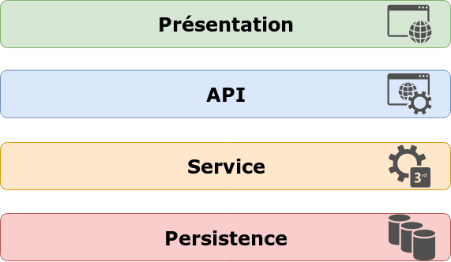
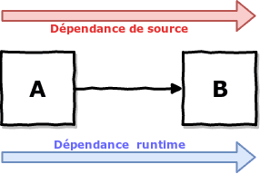
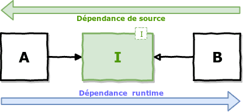
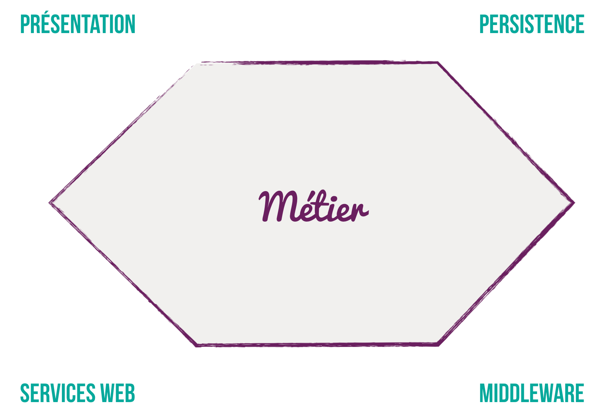

Architecture Hexagonale
Architecture en Couches

- Généralement les couches supérieures ne connaissent pas les implémentationsdes couches inférieures
- Intuitivement, on pourrait penser que la logique métier se trouve dans la couche service
- Et ben non, généralement le métier est dispersé entre la couche service et persistence
Les principes SOLID
- S Single responsability principe
- O Open/closed principe
- L Liskov substitution principle
- I Interface segregation principle
- D Dependency inversion principle
Principe d’inversion des dépendances


idée simple, isoler le métier des détails techniques de l’implémentation
le métier ne dépend de rien

toutes les dépendances vont de l’extérieur vers l’intérieur
une couche d’adaptation fait le lien entre les mondes
Un modèle agnostique
- pas de framework
- pas de base de données
- pas d’accès réseau
- pas d’accès disque/IO
Il ne doit JAMAIS y avoir dans le modèle de référence vers l’infrastructure
Les Ports
Le modèle expose des interfaces qui ont un sens métier.


Ces interfaces faisant partie du domaine, elles doivent avoir un sens métier
Une infra qui s’adapte
Si on change de base de
données, on change l’adaptateur et on ne touche pas au métier


On y gagne ...
- Une testabilité du métier accrue
- Une pérennisation du métier face aux changements techniques
- Une capacité à livrer de la valeur rapidement
TL;DR
- Isolation du métier
- pas d’infra dans le domaine
- des interfaces avec du sens métier
- privilégier les type fort au String
- pas d’infra dans le domaine